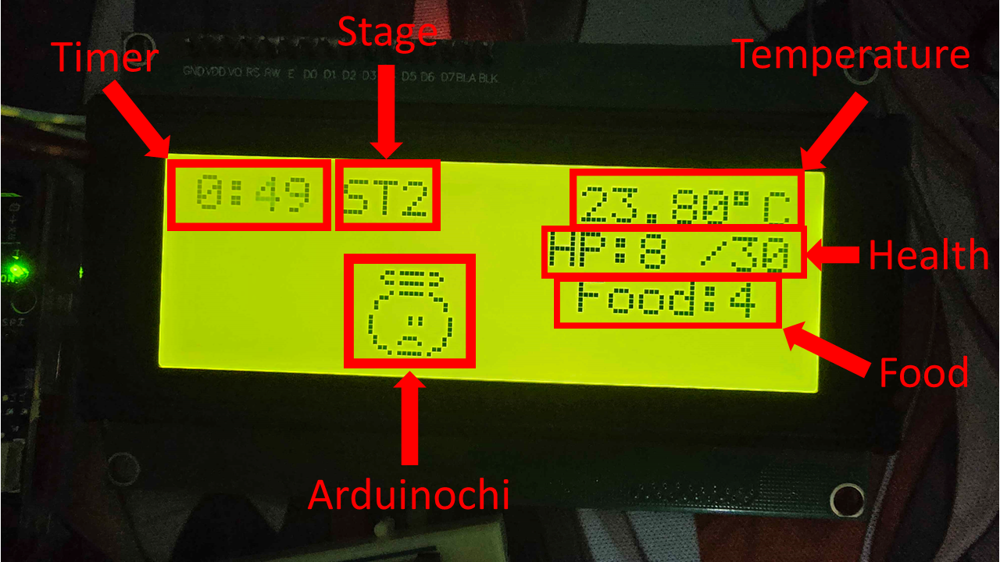
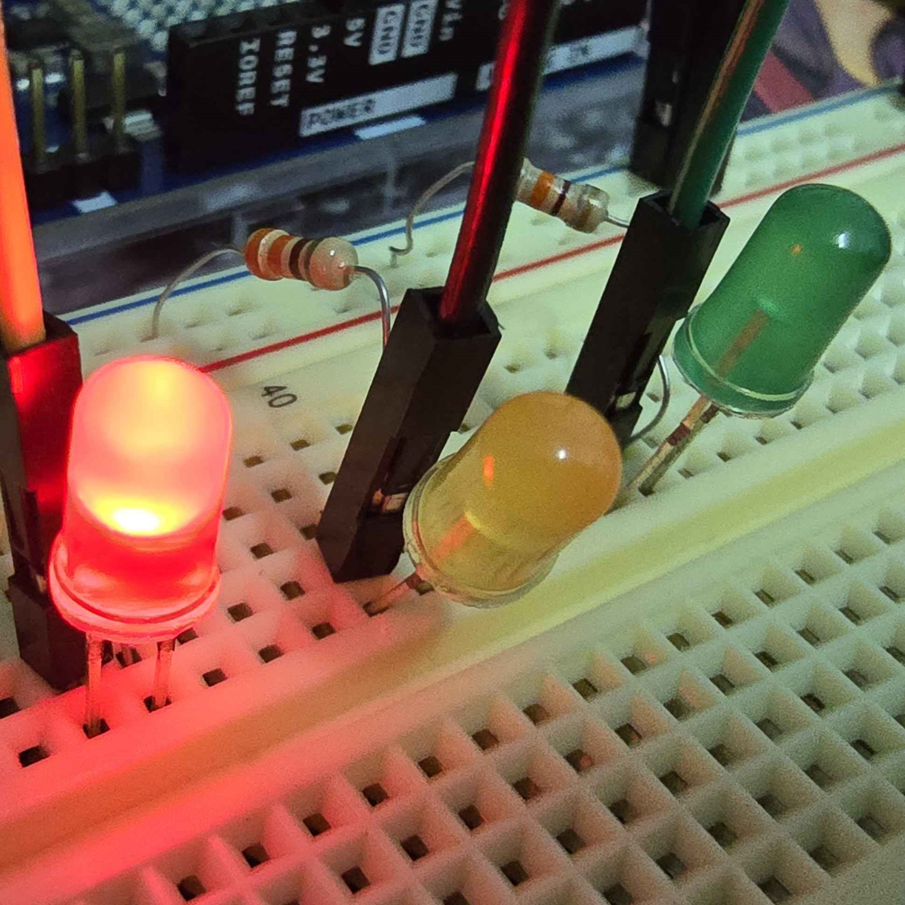

Physical Computing Project 2024
ArduinoChi
โปรเจคนี้เป็นส่วนหนึ่งในรายวิชา PHYSICAL COMPUTING 06016409 ภาคเรียนที่ 1 ปีการศึกษา 2567 ของคณะเทคโนโลยีสารสนเทศ สาขาเทคโนโลยีสารสนเทศ สถาบันเทคโนโลยีพระจอมเกล้าเจ้าคุณทหารลาดกระบัง
Physical Computing Project 2024
โปรเจคนี้เป็นส่วนหนึ่งในรายวิชา PHYSICAL COMPUTING 06016409 ภาคเรียนที่ 1 ปีการศึกษา 2567 ของคณะเทคโนโลยีสารสนเทศ สาขาเทคโนโลยีสารสนเทศ สถาบันเทคโนโลยีพระจอมเกล้าเจ้าคุณทหารลาดกระบัง
โปรเจคนี้ได้จัดทำขึ้นมาเพื่อต้องการแสดง ให้เห็นว่าทางเราสามารถสร้างเกมขึ้นได้ด้วยทรัพยากรที่จำกัด เน้นใช้ความคิดสร้างสรรค์เพื่อให้จำลองออกมาในรูปแบบของการเลี้ยง มอนสเตอร์ตัวน้อยในนามของ "ArduinoChi" ผ่านการใช้เซนเซอร์วัดอุณหภูมิเป็น Input และให้แสดงผลโดยใช้ LCD เป็น Output ออกมา
1.) ระบบเลือดของ ArduinoChi ที่จะ Max สูงสุดที่ 30 (HP)
2.) ระบบเวลาบอกว่าผ่านไปกี่นาที/วินาทีแล้ว
3.) Stage (ST) ว่าอยู่ Stage ไหน จะเพิ่ม 1 เมื่อเวลาผ่านไป 30 วินาที เมื่อ Stage (ST) >= 2 เลือดจะลด ST – 1 หน่วย (เช่น ST2 HPจะลด 1หน่วย) ลด HP ทีละ 2 วินาที
4.) อาหารที่จะเริ่มต้นมาด้วย 2 และจะเพิ่มทีละ 2 เรื่อยๆ เมื่อผ่าน Stage (ST) ไป สามารถกด Button switch เพื่อกินอาหารได้และจะเพิ่ม HP 10 หน่วย
5.) อุณหภูมิที่วัดจาก DHT11 Sensor ถ้าอุณหภูมิ 24.5 – 25.5 องศา HP จะเพิ่ม 5 หน่วย ถ้าอุณหภูมิ น้อยกว่า 24 หรือ มากกว่า 26 เลือดจะลดตาม Stage (ST) ที่อยู่ ถ้าอุณหูมิอยู่ที่ 24 – 24.99 หรือ 25.56 – 25.99 องศา เลือดก็จะไม่เพิ่ม/ลด เลือดจะเพิ่ม/ลด ทีละ 5 วินาที
6.) อารมณ์ของ ArduinoChi เมื่อ HP เหลือ ตามที่กำหนด LED ก็จะติด และแสดงอารมณ์ผ่านจอ LCD
• 20-30 LED สีเขียวจะติด และแสดงอารมณ์ดี
• 10-19 LED สีเหลืองจะติด และแสดงอารมณ์ปกติ
• 0-9 LED สีแดงจะติด และแสดงอารมณ์เศร้า
7.) เมื่อ ArduinoChi HP = 0 และตายก็จะแสดงหน้าต่าง RIP และเวลาที่เลี้ยงได้ และเมื่อกด Button switch ก็จะเป็นการกลับไปเริ่มใหม่อีกรอบ
ArduinoChi จะมีชีวิตอยู่ได้ท่ามกลางสภาพแวดล้อมที่เหมาะสม กระตุ้นให้คนที่อยู่แต่ในบ้านรู้สึกอยากถ่ายเท หรือปรับอากาศเพื่อให้ร่างกายและ ArduinoChi ของตัวเองปรับตัวพร้อมรู้สึกได้รับการฟื้นฟูหลังจากทำงานหนักตลอดทั้งวัน โดยใช้ประโยชน์จากอุณหภูมิเป็นหลัก สำหรับรูปแบบการเล่นก็จะมีระบบคร่าวๆ ดังต่อไปนี้
1) จากรูปข้างต้นบนจอ LCD ก็จะประกอบไปด้วย
⏰ Timer มีหน้าที่ใช้ในการจับเวลานับตั้งแต่ที่เริ่มเลี้ยงตัวของ ArduinoChi จนกระทั่งจบเกม
⏳ Stage ใช้ในการเพิ่มระดับความยากของเกม โดยในทุกๆ 30 วินาที จะเปลี่ยนระดับให้ยากขึ้นซึ่งจะส่งผลต่ออัตราการลดเลือดของ ArduinoChi ที่จะเยอะขึ้นตามจำนวนด่านละ 1 หน่วย
☔ Temperature มีหน้าที่แสดงผลอุณหภูมิห้องในปัจจุบัน โดยรับค่ามาจากเซ็นเซอร์
💉 Health ใช้บ่งบอกสถานะเลือดของ ArduinoChi ในปัจจุบัน
🎂 Food ใช้บอกจำนวนอาหารที่มีอยู่ โดยจะได้รับเสบียงเพิ่มขึ้น 2 หน่วย หากผู้เล่นสามารถผ่านเข้าสู่ด่านถัดไปได้
👶 ArduinoChi แสดงตัวของมอนสเตอร์ที่เราเลี้ยง โดยที่มันจะขยับไปเรื่อยๆ และจะแสดงสีหน้าตามอารมณ์ของมัน
2) โดยหลังจากที่เริ่มเกม ทางผู้เล่นจะต้องหาพื้นที่อุณหภูมิให้เหมาะสมกับที่ตัว ArduinoChi จะต้องการ ซึ่งจะอยู่ที่ 24-26 องศาเซลเซียส และจะมีกฏเพิ่มเติมคือ
☀️ ในอุณหภูมิ 24.5-25.5 องศาเซลเซียส Arduinochi จะได้รับการเพิ่มเลือด 5 หน่วยในทุกๆ 5 วินาที
❄️ หากอุณหภูมิปัจจุบันมีค่าต่ำกว่า 24 องศา หรือมากกว่า 26 องศาเซลเซียส Arduinochi จะถูกหักเลือดตามระดับความยากในทุกๆ 2 วินาที
☁️ นอกเหนือจากที่ได้กล่าวมาข้างต้น Arduinochi จะไม่ได้รับการเพิ่มเลือด หรือหักเลือดแต่อย่างใดจากสถานะอุณหภูมิ
3) 💔 ในการผ่านด่านแต่ละครั้งเมื่อ ArduinoChi อายุมากขึ้น น้องก็มีความเสี่ยงที่จะเสียเลือดมากขึ้นเช่นกัน โดยจะเริ่มถูกหักเลือดเพิ่มขึ้น 1 หน่วย นับตั้งแต่เข้าสู่ ST2 เป็นต้นไป
4) 🍼 ผู้เลี้ยงน้องสามารถแก้ปัญหาสามารถให้อาหารได้โดยกดปุ่มที่ตัวบอร์ด จะดำเนินการให้อาหาร Arduinochi ซึ่งจะสามารถเพิ่มเลือดได้ 10 หน่วย และในช่วงรีฟิลอาหารแต่ละครั้งผู้เล่นสามารถสะสมเสบียงได้เรื่อยๆ
5) การสังเกตอาการของน้อง นอกจากการดูผ่าน Output แล้ว ในตัวบอร์ดจะมีไฟ LED ทั้งหมด 3 หลอด ซึ่งจะแบ่งเกณฑ์ได้ตามนี้

❤️ หากไฟสีแดงสว่าง นั่นหมายความว่า มอนสเตอร์จะเหลือเลือดอยู่ราวๆ 0-9 หน่วย
💛 หากไฟสีเหลืองสว่าง นั่นหมายความว่า มอนสเตอร์จะเหลือเลือดอยู่ราวๆ 10-19 หน่วย
💚 และหากไฟสีเขียวสว่าง นั่นหมายความว่า มอนสเตอร์จะมีเลือดอยู่ประมาณ 20-30 หน่วย
6) 👻 หากผู้เล่นไม่สามารถรักษาระดับชีพจรของ ArduinoChi เอาไว้ได้ เมื่อเลือดเหลือ 0 เท่าไหร่ เกมก็จะจบรอบทันทีโดยจะมีสถิติเวลาบอกไว้ในหน้า Game Over และหากผู้เล่นต้องการที่จะเล่นเกมต่อไปก็ให้กดปุ่มซ้ำอีกรอบ
แสดงผลหน้าจอ / เลือด / อุณหภูมิ / เวลา / อาหาร / จำนวนเลือดที่ลด / ArduinoChi
วัดอุณหภูมิ (Temperature)
เมื่อกดจะเป็นการให้อาหาร / เริ่มใหม่เมื่อ ArduinoChi ตาย
แสดงสัญญาณอารมณ์ของ ArduinoChi แดง / เศร้า, เหลือง / ปกติ, เขียว /ดี